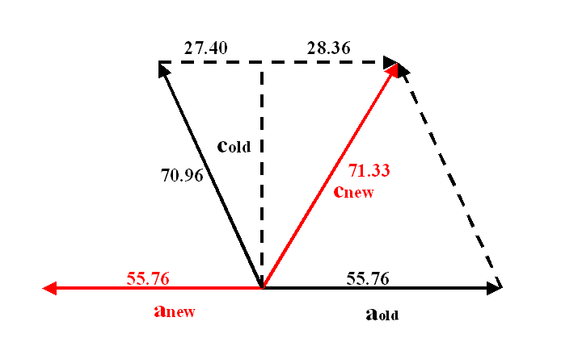
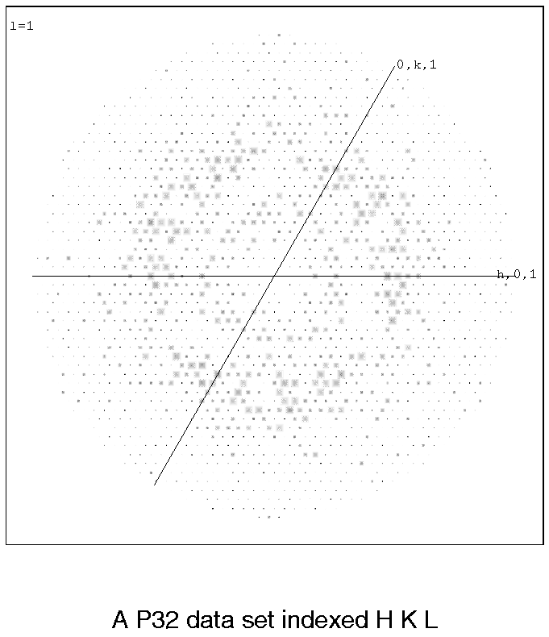
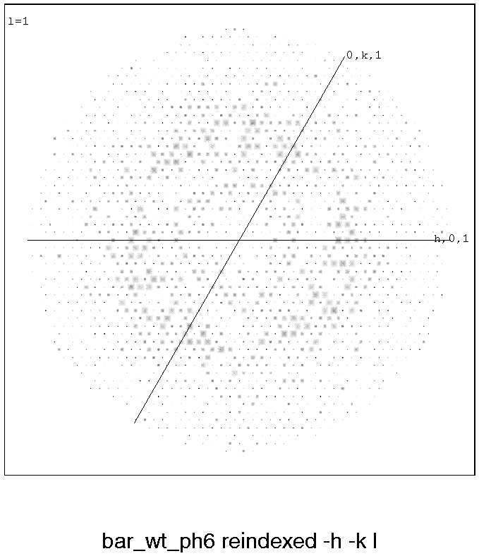
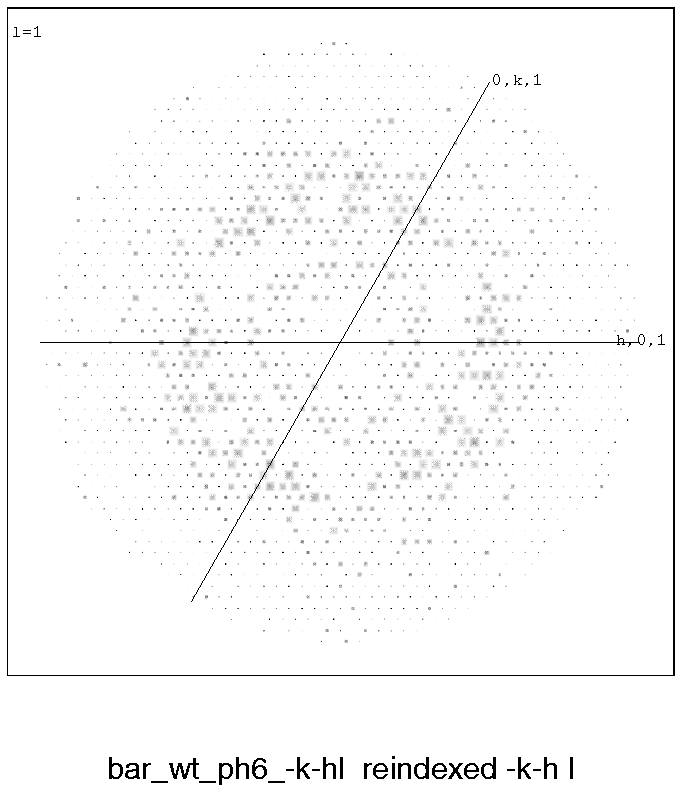
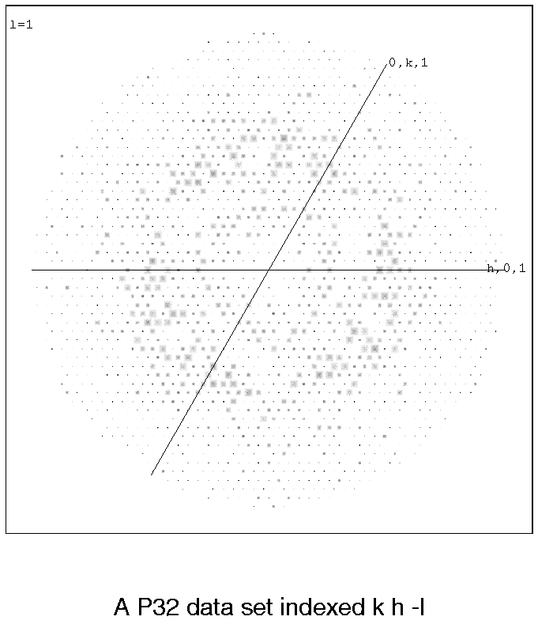
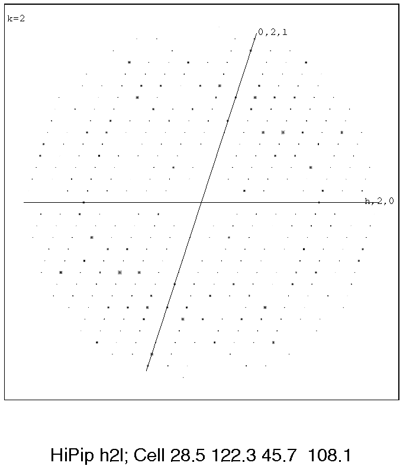
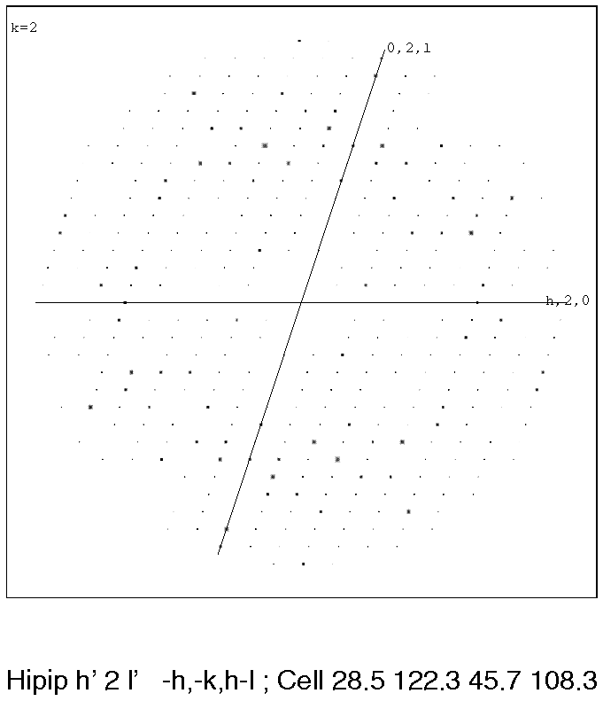

It is quite common to find that the diffraction from subsequent crystals for a protein do not apparently merge well. There are many physical reasons for this, but before throwing the data away it is sensible to consider whether another indexing regime could be used. For illustrations and examples see HKLVIEW-examples below. For documentation on re-indexing itself, and some hints, see also REINDEX.
For orthorhombic crystal forms with different cell dimensions along each axis you can usually recognise if the next crystal is the same as the last and see how to transform it (remember to keep your axial system right-handed!).
In P1 and P21 there are many
ways of choosing axes,
but they should all generate the same crystal volume. Use
MATTHEWS_COEF or some other
method to check this - if the volumes are not the same, or at least related by
integral factors, you have a new form.
If they are the same it is recommended to plot some sections of the reciprocal
lattice; you can often see that the patterns will match if you rotate in some way
(see
HKLVIEW-examples below). A common change
in P21
or C2 where the twofold axis will be constant, is that
a*new = a*old
+ c*old, and c*new
must be chosen carefully.
One very confusing case can arise if the length of (a*+nc*) is almost equal
to that of a* or nc*, but it should be possible to sort out from the diffraction pattern
plots.
Confusion arises mostly when two or more axes are the same length, as in the tetragonal, trigonal, hexagonal or cubic systems. In these cases any of the following definitions of axes is equally valid and likely to be chosen by an auto-indexing procedure. The classic description of this is that these are crystals where the Laue symmetry is of a lower order than the apparent crystal lattice symmetry.
| real axes: | (a,b,c) | or | (-a,-b,c) | or | (b,a,-c) | or | (-b,-a,-c) |
| reciprocal axes: | (a*,b*,c*) | or | (-a*,-b*,c*) | or | (b*,a*,-c*) | or | (-b*,-a*,-c*) |
The crystal symmetry may mean that some of these systems are already equivalent:
For instance, if (h,k,l) is equivalent to (-h,-k,l), the axial system
pairs [(a,b,c) and (-a,-b,c)] and
[(b,a,-c) and (-b,-a,-c)]
are indistinguishable. This is the case
for all tetragonal, hexagonal and cubic spacegroups.
If (h,k,l) is equivalent to (k,h,-l), the axial system pairs
[(a,b,c) and (b,a,-c)] and
[(-a,-b,c) and (-b,-a,-c)]
are indistinguishable. This is true for
P4i2i2, P3i2,
P6i22 and some cubic spacegroups.
If (h,k,l) is equivalent to (-k,-h,-l), the axial system pairs
[(a,b,c) and (-b,-a,-c)] and
[(-a,-b,c) and (b,a,-c)]
are indistinguishable. This is only true for
P3i12 spacegroups.
See detailed descriptions below.

Some basic trigonometry shows the new cell dimensions to be:
Note the transformation -h, -k, h+l preserves the hand, i.e. the corresponding matrix has a determinant of +1.
Here are details for the possible systems:
| real axes: | (a,b,c) | and | (b,a,-c) |
| reciprocal axes: | (a*,b*,c*) | and | (b*,a*,-c*) |
| space group number | space group | point group | crystal system |
|---|---|---|---|
| 75 | P4 | PG4 | TETRAGONAL |
| 76 | P41 | PG4 | TETRAGONAL |
| 77 | P42 | PG4 | TETRAGONAL |
| 78 | P43 | PG4 | TETRAGONAL |
| 79 | I4 | PG4 | TETRAGONAL |
| 80 | I41 | PG4 | TETRAGONAL |
| space group number | space group | point group | crystal system |
|---|---|---|---|
| 89 | P422 | PG422 | TETRAGONAL |
| 90 | P4212 | PG422 | TETRAGONAL |
| 91 | P4122 | PG422 | TETRAGONAL |
| 92 | P41212 | PG422 | TETRAGONAL |
| 93 | P4222 | PG422 | TETRAGONAL |
| 94 | P42212 | PG422 | TETRAGONAL |
| 95 | P4322 | PG422 | TETRAGONAL |
| 96 | P43212 | PG422 | TETRAGONAL |
| 97 | I422 | PG422 | TETRAGONAL |
| 98 | I4122 | PG422 | TETRAGONAL |
| real axes: | (a,b,c) | and | (-a,-b,c) | and | (b,a,-c) | and | (-b,-a,-c) |
| reciprocal axes: | (a*,b*,c*) | and | (-a*,-b*,c*) | and | (b*,a*,-c*) | and | (-b*,-a*,-c*) |
| space group number | space group | point group | crystal system |
|---|---|---|---|
| 143 | P3 | PG3 | TRIGONAL |
| 144 | P31 | PG3 | TRIGONAL |
| 145 | P32 | PG3 | TRIGONAL |
| 146 | R3 | PG3 | TRIGONAL |
| real axes: | (a,b,c) | and | (b,a,-c) |
| reciprocal axes: | (a*,b*,c*) | and | (b*,a*,-c*) |
| space group number | space group | point group | crystal system |
|---|---|---|---|
| 149 | P312 | PG312 | TRIGONAL |
| 151 | P3112 | PG312 | TRIGONAL |
| 153 | P3212 | PG312 | TRIGONAL |
| real axes: | (a,b,c) | and | (-a,-b,c) |
| reciprocal axes: | (a*,b*,c*) | and | (-a*,-b*,c*) |
| space group number | space group | point group | crystal system |
|---|---|---|---|
| 150 | P321 | PG321 | TRIGONAL |
| 152 | P3121 | PG321 | TRIGONAL |
| 154 | P3221 | PG321 | TRIGONAL |
| 155 | R32 | PG32 | TRIGONAL |
| real axes: | (a,b,c) | and | (b,a,-c) |
| reciprocal axes: | (a*,b*,c*) | and | (b*,a*,-c*) |
| space group number | space group | point group | crystal system |
|---|---|---|---|
| 168 | P6 | PG6 | HEXAGONAL |
| 169 | P61 | PG6 | HEXAGONAL |
| 170 | P65 | PG6 | HEXAGONAL |
| 171 | P62 | PG6 | HEXAGONAL |
| 172 | P64 | PG6 | HEXAGONAL |
| 173 | P63 | PG6 | HEXAGONAL |
| space group number | space group | point group | crystal system |
|---|---|---|---|
| 177 | P622 | PG622 | HEXAGONAL |
| 178 | P6122 | PG622 | HEXAGONAL |
| 179 | P6522 | PG622 | HEXAGONAL |
| 180 | P6222 | PG622 | HEXAGONAL |
| 181 | P6422 | PG622 | HEXAGONAL |
| 182 | P6322 | PG622 | HEXAGONAL |
| real axes: | (a,b,c) | and | (b,a,-c) |
| reciprocal axes: | (a*,b*,c*) | and | (b*,a*,-c*) |
| space group number | space group | point group | crystal system |
|---|---|---|---|
| 195 | P23 | PG23 | CUBIC |
| 196 | F23 | PG23 | CUBIC |
| 197 | I23 | PG23 | CUBIC |
| 198 | P213 | PG23 | CUBIC |
| 199 | I213 | PG23 | CUBIC |
| space group number | space group | point group | crystal system |
|---|---|---|---|
| 207 | P432 | PG432 | CUBIC |
| 208 | P4232 | PG432 | CUBIC |
| 209 | F432 | PG432 | CUBIC |
| 210 | F4132 | PG432 | CUBIC |
| 211 | I432 | PG432 | CUBIC |
| 212 | P4332 | PG432 | CUBIC |
| 213 | P4132 | PG432 | CUBIC |
| 214 | I4132 | PG432 | CUBIC |
Test to see if the other hand is the correct one:
Change x,y,z for (cx-x, cy-y, cz-z)
Usually (cx,cy,cz) = (0,0,0).
Remember you need to change the twist on the screw-axis stairs for P3i, P4i, or P6i!
P21 - to P21; For the half step of 21 axis, the symmetry stays the same.
P31 - to P32
P32 - to P31
P41 to P43
(P42 - to P42: Half c axis step)
P43 -to P41
P61 to P65
P62 - to P64
(P63 - to P63)
etc.
In a few non-primitive spacegroups, you can change the hand and not change the spacegroup by a cunning shift of origin:
Plus some centric ones:
Full size versions of the example pictures can be viewed by clicking on the iconised ones.
|  | A P32 data set indexed h,k,l |
|  | The same P32 data set, reindexed -h,-k,l |
|  | The same P32 data set, reindexed -k,-h,l |
|  | The same P32 data set, reindexed k,h,-l |
|  | Monoclinic data set, HKLVIEW h,2,l |
|  | The same monoclinic data set, reindexed -h,-k,h-l |
{kind=link}
{kind=link}
{kind=link}
{kind=link}
{kind=link}
{kind=link}